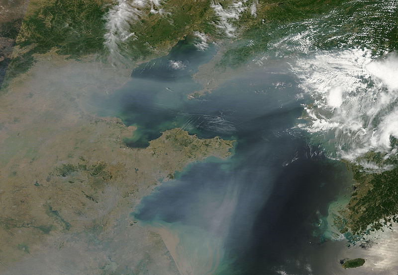

- Title Page
- Introduction
- Becoming an environmentalist
- Obstacles to enforcement
- “We must fight with data”
- China Pollution Maps launched
- Taking on supply chains
- Pollution Information Transparency Index
- Tainted milk, heavy metals—and more
- Poison Apple
- Green investment
- Blueprint for blue skies
- Real-time data begins
- Real-time dilemma
- Appendix 1
- Appendix 2
- Appendix 3
- Appendix 4
“We must fight with data”
From Ma Jun’s point of view, however, the main obstacle to action was that citizens did not have enough information. People were not aware of the looming dangers of environmental degradation. He believed public participation was the key to pressuring the government to enforce regulations, and to making polluters change their behavior. But citizens would have to perceive that a healthy environment contributed as much to their standard of living as did financial wealth. They would have to be motivated to act. To reach that point, they would need information. “We cannot fight with slogans or poems,” Ma put it to one reporter. “We must fight with data.”[7] He explains:
All these years I’ve been looking for different ways to solve the problem, and eventually came up with the idea it’s not just a lack of technology or money, it’s about the lack of incentives [due to] gaps in our environmental governance. To change that, we had to engage the public and they needed to be informed before they got involved. So, we started our transparency work.
China’s Water Crisis established Ma as a commanding voice on the environment. In 2004, he was invited to the Yale World Fellows program, which brought together emerging leaders from around the globe for four months to collaborate and network, study international issues and strengthen management skills. While at Yale, he studied comparative environmental management laws and systems. He learned that litigation was essential to environmental achievements in the US, Europe and Japan. But it would take years for China’s legal system to develop into a useable mechanism for environmentalists. “So I think that transparency is the starting point for us to address the problem,” he says.

© NASA
Haze off of the coast of China, likely from industrial pollution
{kind=link}
Ma was particularly interested in the development of Pollutant Release and Transfer Registers (PRTRs) in the West. These public databases were developed after a 1984 disaster in Bhopal, India, in which over 3,700 people died in one night and 500,000 were sickened by a toxic gas leak at a pesticide plant jointly owned by the Indian government and Union Carbide of the US. Bhopal sent shockwaves globally, as the inherent dangers of industrial secrecy became apparent to citizens everywhere.
The US was first when, in 1986, it passed a Toxic Release Inventory (TRI) law in response to Bhopal. Under TRI, the US Environmental Protection Agency (EPA) collected, on an annual basis, self-reported information from companies that released or transferred hazardous substances. The companies had to detail specific chemicals and quantities handled, and treatment methods used. EPA inspectors and attorneys ensured compliance with the reporting requirements. TRI information was stored in a publicly accessible database. Eventually, the database was put online, along with search tools and maps, making public access even simpler.
Starting in Europe in the early 2000s, other countries began adopting similar registries modeled on TRI. PRTRs signaled a new approach to environmental protection: the public had a fundamental “right to know” about potentially hazardous chemicals released into the environment, even when the emissions were within regulatory limits. Moreover, it was hoped that transparency would lead companies to improve environmental performance beyond the minimum standards required by the law.
Ma wanted a similar mechanism in China—an accessible and regularly updated database detailing the composition and quantity of toxic emissions, and who was releasing them. But the Chinese government remained protective of industry and wary of its own citizens. It was not likely to adopt a PRTR any time soon.
So Ma decided he would have to create the database himself. The question was, what would it contain? Chinese companies did not have to report their emissions as US companies did under TRI. Still, some company information was in the public domain—for example, “environmental supervision records” that identified enterprises fined for exceeding emission standards. These were published by local EPBs and often reported in official media. While most companies operated under the public radar, violators at least could be identified.
There were also some pollution data available to the public. These included levels of common pollutants in the air and water, and aggregate domestic and industrial emissions of certain chemicals and wastes, as measured periodically by environmental officials. While not linked to specific polluters, the provincial and city-level data could be amassed and made much more useful to citizens through creative use of technology. “This is the information age,” says Ma. “Information has created opportunities for all those who care about the solution of social issues. I think we [should] all tap into the potential created by this explosive growth of information technology.”He began to see how the pieces could fit together.
[7] Christina Larson, “In China, a New Transparency On Government Pollution Data,” Yale Environment 360,10 December 2010, http://e360.yale.edu/feature/in_china_a_new_transparency_on_government_pollution_data/2352/(accessed 16 July 2014).